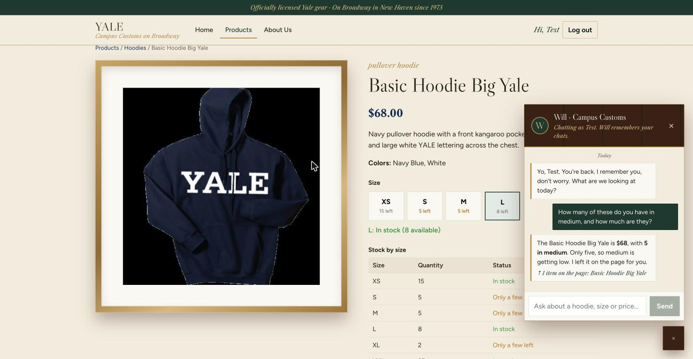
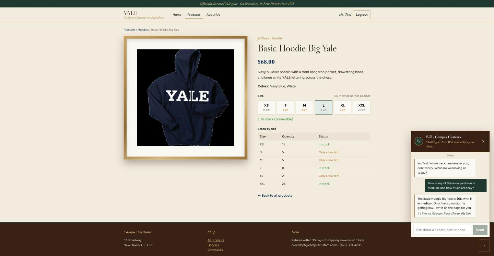
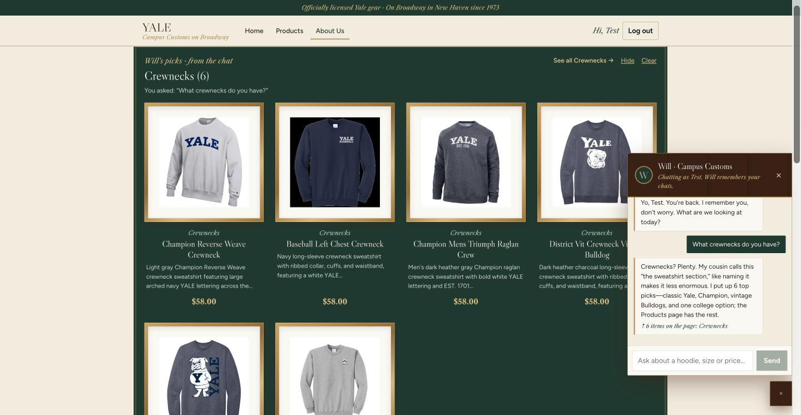
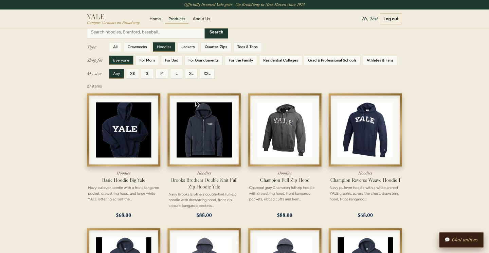
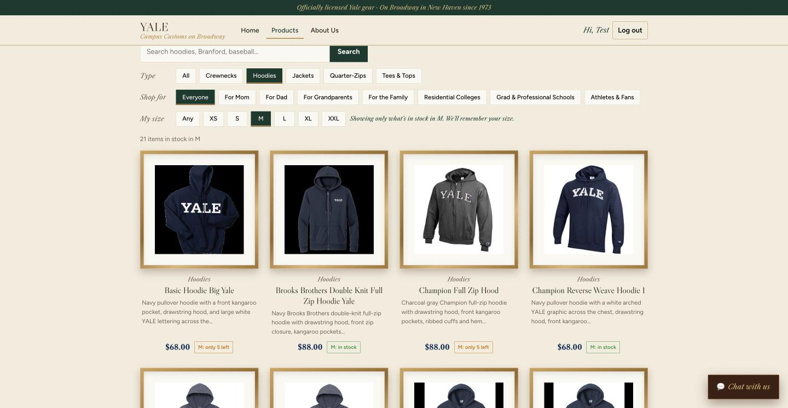

| # | Check | What I did | Result |
|---|---|---|---|
| 1 | Chat inventory lookup | On the Basic Hoodie Big Yale page, asked Will how many are in medium and the price | ✓ Pass: $68, 5 in medium, matches the database |
| 2 | Dynamic search cards | Asked Will "What crewnecks do you have?" | ✓ Pass: 6 crewneck cards appeared on the page |
| 3 | Usability feature: My size filter | On Hoodies, switched My size from Any to M | ✓ Pass: 27 → 21 hoodies, each tagged with its M stock |
1. Chat inventory lookup
Does the chatbot report an item's real stock and price from the database?

campus_customs.db. He also understood "these" meant the product open on the page.
inventory table) shows the same numbers Will used.| Field (database) | Database value | Will said |
|---|---|---|
catalogue.price | $68.00 | $68 ✓ |
inventory.quantity (size M) | 5 | 5 in medium ✓ |
2. Dynamic search cards
After a category question, do matching product cards appear on the page?

3. Usability feature (Problem 9): My size filter
Does picking a size show only what's actually in stock in that size?


Images are in app_check_images/ next to this page and linked with relative paths, so this file opens by double-clicking. Click any screenshot to see it full size.